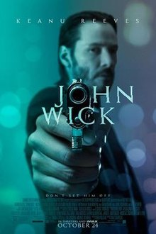

John Wick Film Afişi Yönetmen Chad Stahelski, David Leitch Yazar Derek Kolstad Oyuncular Keanu Reeves Michael Nyqvist Bridget Moynahan John Leguizamo Alfie Allen Adrianne Palicki  Dean Winters Ian McShane Willem Dafoe Müzik Tyler Bates Joel J. Richard Yapım şirketi Summit Entertaintment Thunder Road Pictures 87Eleven Productions Dağıtıcı Lionsgate Cinsi Sinema filmi Yapım yılı 2014 Çıkış tarih(ler)i 19 Eylül 2014 (Amerika Birleşik Devletleri) Süre 101 dakika Ülke ABD Dil İngilizce Bütçe $20-30 milyon[1][2] Hasılat $86 milyon[3] Devam filmi John Wick: Bölüm 2 John Wick, 2014 yılında yayınlanan Amerikan aksiyon filmidir. Chad Stahelski ve David Leitch tarafından yönetilmiş, baş rolünü Keanu Reeves'in canlandırmıştır. Evlendiği için emekliye ayrılan bir tetikçinin, antika arabasının çalınması ve ölen karısından hediye olarak kendisine bırakılan köpeğinin öldürülmesiyle ortaya çıkan senaryoyu işlemektedir. 10 Şubat 2017 tarihinde John Wick: Bölüm 2, 9 Mayıs 2019 tarihinde ise John Wick 3: Parabellum yayınlandı. Konusu Emekli bir tetikçi olan John Wick, çok sevdiği eşini kaybetmiştir. John Wick için hayatın tek anlamı karısından geriye kalan köpeğidir. Bir gün Rus mafya prensi Iosef Tasarov ve adamları evine girer ve 1969 model Mustang'ını çalıp, köpeğini öldürürler. İntikam ateşiyle eski hayatına geri döner ve düşmanlarıyla amansız bir mücadeleye başlar.
Jonh Wick Trailer